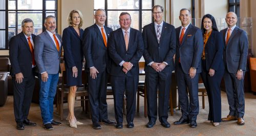

Regents begin search for next president of Connors State College
Guiding the future of the A&M system, the Board of Regents brings together leaders dedicated to advancing education, research and service across the state.
Presidential search
Guiding the future of the A&M system, the Board of Regents brings together leaders dedicated to advancing education, research and service across the state.
From Left to Right: Billy G. Taylor, Member; Chris Franklin, Member; Jennifer Callahan, Member; Joe D. Hall, Member; Rick Walker, Chair; Cary Baetz, Vice Chair; Tracy Poole, Member; Blayne Arthur, Member; Jason Ramsey, Interim Chief Executive Officer
Not Pictured: Jimmy Harrel, Member
Meet the MembersGuiding the future of the A&M system, the Board of Regents brings together leaders dedicated to advancing education, research and service across the state.
Presidential searchIn accordance with 74 O.S. § 3106.4, the Board of Regents provides required public information online to support transparency, accountability, and public access.
Compliance details1:30 PM
Hamm Institute for American Energy at OSU
10:00 AM
Northeastern Oklahoma A&M College
10:00 AM
Hamm Institute for American Energy at OSU
10:00 AM
Hamm Institute for American Energy at OSU